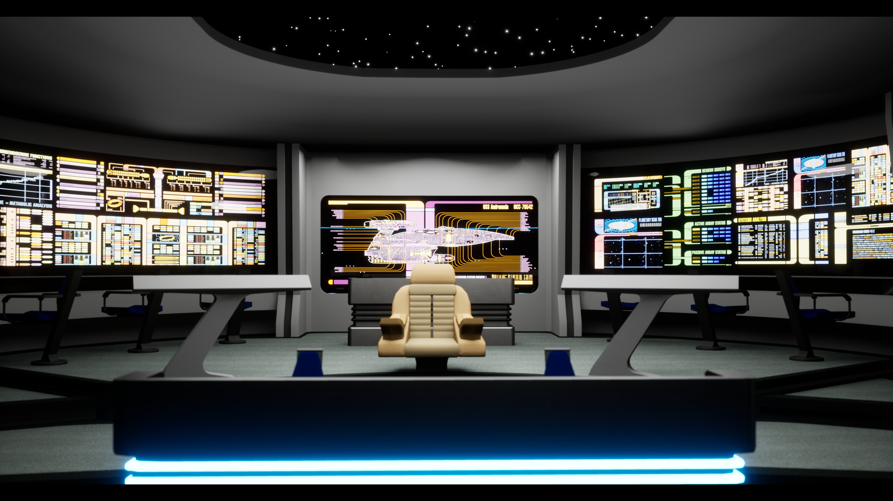
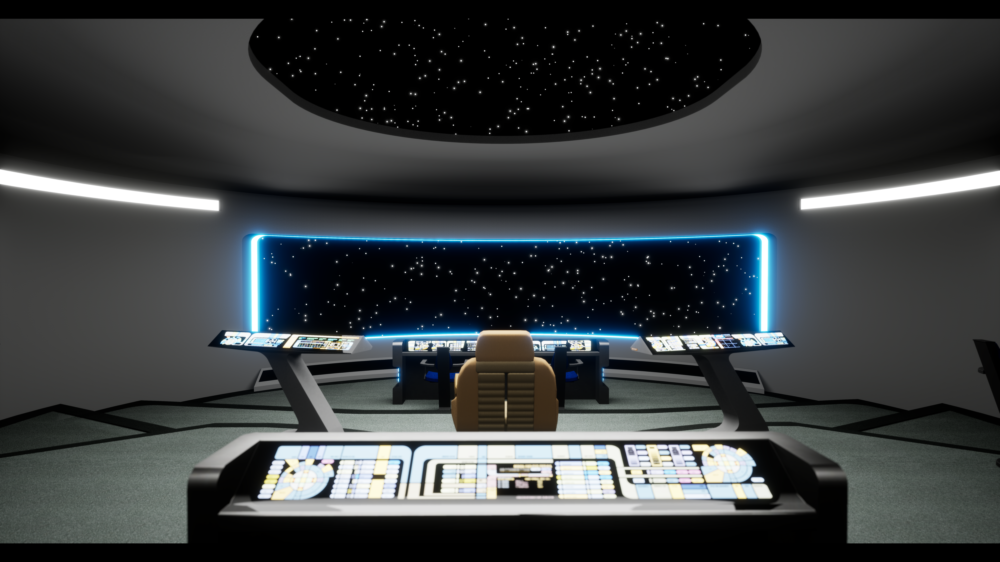
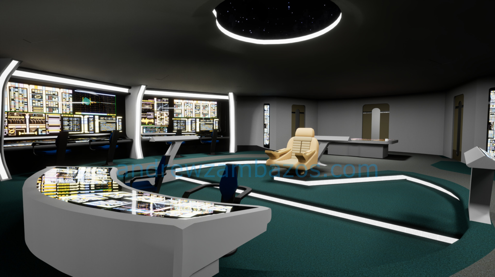

Star Trek in Unreal Engine
A custom environment design project recreating authentic Star Trek starship interiors using Unreal Engine 5's cutting-edge rendering technology and real-time lighting systems.
Overview
This project explores the challenge of faithfully recreating Star Trek environments in a modern game engine while maintaining both authenticity to the source material and technical interactivity. The goal was to blend iconic Starfleet aesthetics with cutting-edge rendering technology.
The focus centered on detailed modeling, dynamic lighting, and immersive textures, particularly the bridges and command centers of Starfleet vessels like the U.S.S. Andromeda and the Clarke. Using Unreal Engine 5's advanced systems, every detail from console interfaces to atmospheric lighting was crafted with precision and realism.
Design & Development
Engine & Rendering
The project was developed using Unreal Engine 5, leveraging Nanite for high-fidelity geometry that handles complex starship interiors with minimal performance cost. Lumen provides real-time global illumination, creating authentic lighting that reflects the sleek, sophisticated aesthetic of Starfleet ship design.
3D Modeling & Asset Creation
Blender was used as the primary 3D modeling tool, with careful attention to recreating authentic Starfleet interior design. Ship consoles, panels, seating arrangements, and environmental details were modeled to match the visual language established across Star Trek franchises. Every model was optimized for real-time rendering within UE5.
Lighting & Atmosphere
Dynamic lighting and real-time reflections bring the environments to life. Carefully placed light sources create the warm, controlled ambiance of a starship bridge while maintaining technical realism. Reflections on polished surfaces and console displays enhance immersion and authenticity.
Project Image Gallery




